2017-12-12 Rework Diffs
Looking for an overview of changes from a recent hero rework? You've found the place. Green stuff is new, red has been removed. Refer to the Legend below for specifics on box and line highlights.
Legend
-
New
This talent is all shiny and new, and completely green in color -
Changed
UpdatedThe green highlights indicate the new descriptionWhile the red highlights show what the description used to say -
Moved
Moved from level XThis talent has been moved levels; it will have a blue label describing the move.Will generally be followed by a red section listing the old description too -
Unchanged
These white boxes are exactly as they were before; nothing changed here -
Removed
This removed talent is entirely red and sad because it no longer exists for this hero :(
Nova
Developer Comments:
- Nova now starts with a new active (called Ghost Protocol) that she can use to immediately enter Stealth (Default Hotkey: 1) that also spawns a Holo Decoy at her location. Additionally, Nova now gains a significant movement speed boost when stealthed (currently 15%). These changes should allow Nova to position a little more aggressively and have some opportunities for escape if she is caught.
- The Snipe Master talent is now baseline to reward careful positioning and aim without having to sacrifice a talent tier.
- Holo Decoys now do a small amount of Nova's damage baseline, and use a smarter AI system. Since Nova's position will be much more apparent in the new system, we know that Holo Decoys would be much less effective as a confusion tool. With the new smarter clones and added damage, they might fake people out a bit more, add a bit of confusion, and can also be used to dismount enemy Heroes, prevent objective captures, etc.
Abilities
-
Snipe
UpdatedMana: 50 Cooldown: 6Deal 255 310 (+4% per level) damage to the first enemy hit.Passive: Hitting an enemy Hero with Snipe permanently increases the damage of Snipe by 5%, stacking up to 25%. Gain an additional 25% damage bonus at maximum stacks. All stacks are lost if Snipe fails to hit an enemy. -
Pinning Shot
UpdatedMana: 65 Cooldown: 12Deal 105 110 (+4% per level) damage to an enemy and slow it by 40% for 2.25 seconds. -
Holo Decoy
UpdatedMana: 50 Cooldown: 15Create a Decoy for 5 seconds that attacks enemies, dealing 10% of Nova's normal damage appears to attack enemies. Using this Ability does not break Stealth. -
Triple Tap
UpdatedMana: 100 Cooldown: 100Locks in on the target Hero, then fires 3 shots that hit the first Hero or Structure they come in contact with for 372 338 (+4% per level) damage each. -
Precision Strike
Mana: 100 Cooldown: 60After a 1.5 second delay, deals 456 (+4% per level) damage to enemies within an area. Unlimited range. -
Permanent Cloak
UpdatedGain Stealth when out of combat for 3 seconds. Taking damage, attacking, using Abilities, or Channeling ends Stealth. Remaining stationary for at least 1.5 seconds while Stealthed grants Invisible.Passive: Gain 15% Movement Speed while Stealthed. -
Ghost Protocol
Cooldown: 60Activate to instantly grant Stealth to Nova and spawn a Holo Decoy at her location. Nova is Unrevealable for the first 0.5 seconds when Stealthed by Ghost Protocol.
Talents
1
-
Advanced Cloaking
UpdatedAfter being Stealthed for 5 seconds, gain an additional 5% Movement Speed. While Stealthed, regenerate 2 Mana per second and 25% increased movement speed. -
Covert Ops
After being Stealthed for 5 seconds, Pinning Shot's slow is increased to 55% and costs no Mana. Bonus is lost after losing Stealth for 1 second. -
Longshot
Increases the cast range of Pinning Shot by 30%. Pinning Shot also increases the range of Nova's next Basic Attack by 2.
4
-
Covert Mission
Enemy Minions killed near Nova grant a stack of Bribe. Hero Takedowns grant 10 stacks of Bribe. Use 25 stacks to bribe a Mercenary, instantly defeating them. Does not work on Bosses. Maximum of 100 stacks. If a camp is defeated entirely with Bribe, the camp respawns 50% faster. -
Holo Stability
Increase the cast range and duration of Holo Decoy by 100%. -
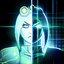
Rapid Projection
Reduces Holo Decoy's cooldown and Mana cost by 40%.
7
-
Anti-Armor Shells
Nova's Basic Attacks deal 250% damage and decrease the Armor of Heroic targets by 10 for 3 seconds, but her Attack Speed is proportionally slower. -

One in the Chamber
UpdatedAfter using an Ability, Nova's next Basic Attack within 3 seconds deals 70% 80% additional damage. -
Perfect Shot
Moved from level 16Hitting an enemy Hero with Snipe reduces the cooldown by 2 3 seconds. -
Snipe Master
Hitting an enemy Hero with Snipe permanently increases the damage of Snipe by 15%. Stacks up to 5 times. All stacks are lost if Snipe fails to hit an enemy.
10
-
Precision Strike
Cooldown: 60After a 1.5 second delay, deals 456 (+4% per level) damage to enemies within an area. Unlimited range. -
Triple Tap
UpdatedCooldown: 100Locks in on the target Hero, then fires 3 shots that hit the first Hero or Structure they come in contact with for 372 338 (+4% per level) damage each.
13
-
Double Tap
Pinning Shot now has 2 charges. -
Ionic Force Field
Gain 25 Armor for 2 seconds after losing Stealth. -
Psionic Efficiency
UpdatedSnipe's range is increased by 15%, and hitting a Hero with Snipe refunds its Mana cost removes Snipe's Mana cost.
16
-
Crippling Shot
Pinning Shot lowers a Hero's Armor by 25 for the duration of the slow, causing them to take 25% increased damage. -
Explosive Round
Moved from level 13Snipe also deals 50% damage to enemies near the impact. -
Lethal Decoy
UpdatedIncreases the damage Holo Decoy deals to 50% of Nova's damage.Holo Decoy deals 40% of Nova's damage.
20
-
Apollo Suit
Reduce the cooldown of Permanent Cloak by 2 seconds. -
Fast Reload
Triple Tap's cooldown is reset if it kills an enemy Hero. -
Precision Barrage
UpdatedPrecision Strike gains a 2nd charge and its coodown is reduced by 30 seconds. -
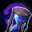
Rewind
Cooldown: 60Activate to reset the cooldowns of your Basic Abilities. -
Ghost Protocol
Cooldown: 60Activate to gain Stealth and become Unrevealable for 2 seconds. Nova's attacks and Abilities will also not break Stealth during this time.
Samuro
Developer Comments:
- With Samuro's update, we wanted to play up the "3-card monte" gameplay that we originally intended for this Hero. Samuro should keep his opponents guessing as to which of his images is real, then "reset" using his new Trait once he's been discovered. To that end:
- Samuro can now control his positioning when making new Mirror Images with the real Samuro always spawning towards your current mouse location. This allows more aggressive and calculated plays since you have much more direct control over your positioning.
- Samuro can now swap positions with one of his Mirror Images using his new Trait, Image Transmission. Choosing the Illusion Master talent will now greatly reduce the cooldown of Image Transmission.
- We've shifted a significant portion of the damage dealt by Mirror Images into Samuro himself, since we want to reward players who can successfully utilize his new trait to reposition and confuse the enemy.
Stats
- Basic Attack damage increased from 88 to 110
Abilities
-
Mirror Image
UpdatedCooldown: 18Create 2 Mirror Images that deal 9 damage 25% of your damage and have 50% of Samuro's current Health. Images last up to 18 seconds, and only two can be active at any one time. Mirror Image will remove most negative effects from Samuro. -
Critical Strike
Cooldown: 10 8Your next Basic Attack within 10 seconds will be a Critical Strike, dealing 50% increased damage. This also applies to Images, and does not break Wind Walk. Passive: You and your Images deal a Critical Strike on every 4th Basic Attack. -
Wind Walk
Cooldown: 15Enter Stealth for up to 10 seconds or until you attack, use an Ability, or take damage. While Stealthed, your Movement Speed is increased by 25% and you can pass through other units. Damage taken within the first 1 second will not break Wind Walk. -
Bladestorm
Cooldown: 110Cause a Bladestorm of destructive force around Samuro for 4 seconds, making him Unstoppable and dealing 235 (+4% per level) damage per second to nearby enemies. -
Illusion Master
UpdatedCooldown: 6Mirror Images can be controlled individually or as a group and their damage is increased by 100% deal an additional 10% of Samuro's damage.Passive: Samuro's Basic Attack damage is increased by 10%, and Image Transmission's cooldown is reduced to 8 seconds. -
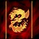
Image Transmission
UpdatedCooldown: 25Activate to switch places with a target Mirror Image, removing most negative effects from Samuro and the Mirror Image.Advancing Strikes: Basic Attacks against enemy Heroes increase Samuro's Movement Speed by 25% for 2 seconds.
Talents
1
-
Way of Illusion
UpdatedQuest: Every time a Mirror Image Critically Strikes a Hero, Samuro gains 0.5 Attack Damage, up to 20. Reward: After hitting 40 Heroes, Samuro gains an additional 20 Attack Damage.Mirror Images no longer benefit from this talent -
Way of the Blade
UpdatedCritical Strike now happens for Samuro and his Mirror Images every 3rd Basic Attack and deals an additional 20% of Samuro's Basic Attack damage. -
Way of the Wind
UpdatedGain 40% Movement Speed for 3 seconds after entering or exiting Wind Walk.Quest: Attacking a Hero from Stealth increases the Movement Speed bonus of Wind Walk by 1.25%, up to 25%. Reward: After attacking 20 Heroes, Wind Walk's Unrevealable duration is increased to 2.5 seconds.
4
-
Deflection
UpdatedAdvancing Strikes grants Samuro and his Mirror Images 25 Physical Armor. -
Mirage
Mirror Image grants Samuro and his Images 40 Spell Armor against the next 2 sources of Spell damage, reducing their damage by 40%. -
One with the Wind
UpdatedWhile Samuro has Wind Walk and for 3 seconds after breaking it, both he and his Mirror Images gain 30 Armor, taking 30% reduced damage from all sources.While Stealthed, gain 60 Armor, taking 60% reduced damage from all sources.
7
-
Burning Blade
UpdatedCritical Strikes from Samuro and Mirror Images deal an additional 65% of their Samuro's Basic Attack damage to the target and nearby enemies. -
Crushing Blows
UpdatedCritical Strike now has 2 charges, and Critical Strikes deal an additional 25% of Samuro's Basic Attack damage. Samuro's Basic Attacks against Heroes reduce the cooldown of Critical Strike by 1.5 seconds. -
Phantom Pain
UpdatedSamuro's Critical Strikes deal an additional 40% of his Basic Attack damage for each Mirror Image that is active.Mirror Images no longer benefit from this talent
10
-
Bladestorm
Cooldown: 110Cause a Bladestorm of destructive force around Samuro for 4 seconds, making him Unstoppable and dealing 235 (+4% per level) damage per second to nearby enemies. -
Illusion Master
UpdatedCooldown: 6Mirror Images can be controlled individually or as a group and their damage is increased by 100% deal an additional 10% of Samuro's damage.Passive: Samuro's Basic Attack damage is increased by 10%, and Image Transmission's cooldown is reduced to 8 seconds.
13
-
Kawarimi
Wind Walk creates a Mirror Image at Samuro's location that will continue whatever he was doing. -
Mirrored Steel
Samuro's Basic Attacks against Heroes reduce the cooldown of Mirror Image by 1 second. -
Shukuchi
Wind Walk teleports Samuro a short distance in the direction he's currently facing.
16
-
Harsh Winds
UpdatedAttacking a Hero during Wind Walk causes them to take 30% increased damage from Samuro for 3 seconds.Mirror Images no longer benefit from this talent -
Merciless Strikes
UpdatedSamuro's Basic Attacks against Stunned, Rooted, or Slowed enemies are always Critical Strikes.Mirror Images no longer benefit from this talent -
Press the Attack
UpdatedWhile Advancing Strikes is active, Samuro and his Mirror Images gain 10% 15% Attack Speed every time they Basic Attack, up to 40% 60%.
20
-
Blademaster's Pursuit
Advancing Strikes grants an additional 15% Movement Speed for Samuro and his Mirror Images, and its duration is increased by 2 seconds. -
Dance of Death
UpdatedMirror Images use Bladestorm when Samuro does, but for 50% damage. -
Three Blade Style
Samuro's Mirror Images gain an additional 50% of his Health and last up to 36 seconds. -
Wind Strider
Wind Walk's cooldown is reduced by 6 seconds.
Valeera
Developer Comments:
- When considering Valeera, we decided that having two sets of abilities, a number of utility openers, as well as an on-command stealth meant that she already had a lot of really cool things going on and didn't require as much work as some of our other Heroes. However, we did feel that Valeera was likely to be the most impacted by the stealth visual change since she has melee openers and no gap-closing abilities. In order to address this, we implemented the following changes:
- After remaining in stealth for 3 seconds, Valeera's openers teleport her to the enemy.
- With this new gap closer, opposing players are still able to see Valeera coming and react, while Valeera players can use quick maneuvers and careful positioning to still get the jump on enemies.
- We've reworked her openers from stealth to be less about stun-locking an opponent and burning them down, and more about having options to shut down enemy damage dealers.
- Cheap Shot: We've significantly reduced the stun duration, but added a blind to counter Heroes that rely heavily on Basic Attacks.
- Garrote: To help in shutting down Supports and Assassins that focus on casting spells, we've buffed the duration of Garrote's silence effect.
- Assassinate: We've cut out some of the damage of this ability, but added an armor reducing effect. This should help Valeera take down more durable targets with the help of her team.
Abilities
-
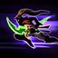
Sinister Strike
Mana: 30 Cooldown: 5Dash forward, hitting all enemies in a line for 110 (+4% per level) damage. If Sinister Strike hits a Hero, Valeera stops dashing immediately and the cooldown is reduced to 1 second. Awards 1 Combo Point. -
Blade Flurry
Mana: 40 Cooldown: 4Deal 130 (+4% per level) damage in an area around Valeera. Awards 1 Combo Point per enemy Hero hit. -
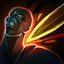
Eviscerate
Mana: 25 Cooldown: 1Eviscerate an enemy, dealing damage per Combo Point. 1 Point: 85 (+4% per level) 2 Points: 170 (+4% per level) 3 Points: 255 (+4% per level). -
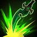
Ambush
UpdatedMana: 10 Cooldown: 1Ambush an enemy, dealing 130 180 (+4% per level) damage and reducing their Armor by 10 for 4 seconds. Awards 1 Combo Point. -
Cheap Shot
UpdatedMana: 30 Cooldown: 1Deal 30 (+4% per level) damage to an enemy, Stun them for 0.75 1.25 seconds, and Blind them for 2 seconds once Cheap Shot's Stun expires. Awards 1 Combo Point. -
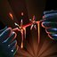
Garrote
UpdatedMana: 30 Cooldown: 1Deal 20 (+4% per level) damage to an enemy and an additional 140 (+4% per level) damage over 7 seconds, and Silence them for 2.75 2.25 seconds. Awards 1 Combo Point. -
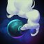
Smoke Bomb
Cooldown: 60Create a cloud of smoke. While in the smoke, Valeera is Unrevealable, can pass through other units, and gains 25 Armor, reducing damage taken by 25%. Valeera can continue to attack and use abilities without being revealed. Lasts 5 seconds. Using this Ability does not break Vanish. -
Cloak of Shadows
Cooldown: 15Valeera is enveloped in a Cloak of Shadows, which immediately removes all damage over time effects from her. For 1.5 seconds, she becomes Unstoppable and gains 75 Spell Armor, reducing Ability Damage taken by 75%. Using this Ability does not break Vanish. -
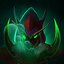
Vanish
UpdatedCooldown: 8Vanish from sight, becoming Stealthed, gaining 20% 10% Movement Speed and access to new Abilities. For the first second, Valeera is Unrevealable and can pass through other units. Remaining stationary for at least 1.5 seconds while Stealthed grants Invisible. After being Stealthed for 3 seconds, Ambush, Cheap Shot, and Garrote have 100% increased range, and cause Valeera to teleport to the target when used.
Talents
1
-
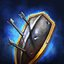
Combat Readiness
UpdatedEach Combo Point spent grants 60 50 Physical Armor against the next enemy Hero Basic Attack, reducing its damage by 60% 50%. Stores up to 3 charges. -
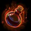
Crippling Poison
UpdatedCooldown: 15Activate to make Valeera's next damaging Ability and subsequent Abilities within 4 seconds Slow targets by 25% for 4 5 seconds. Activating Crippling Poison does not break Stealth. -
Subtlety
UpdatedAfter remaining Vanished for at least 4 seconds After teleporting with Ambush, Cheap Shot, or Garrote, regenerate 8 10 Energy per second for 5 seconds. -
Vigor
Valeera regenerates an additional 2 Energy per second. Reward: After Gathering 20 Regen Globes, increase Valeera's maximum Energy to 120.
4
-
Hemorrhage
UpdatedValeera's Basic Attacks deal 50% 25% additional damage to enemies affected by Garrote. -
Initiative
Ambush, Cheap Shot, and Garrote award 1 Combo Points. -
Relentless Strikes
Reduces the Energy cost of Sinister Strike by 10. -
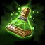
Wound Poison
UpdatedCooldown: 15Activate to make Valeera's next damaging Ability and subsequent Abilities within 4 seconds reduce enemy healing received by 50% for 4 5 seconds. Activating Wound Poison does not break Stealth.
7
-
Fatal Finesse
Quest: Each time Blade Flurry damages an enemy Hero, its damage increases by 3, up to 60. Reward: After damaging 20 Heroes with Blade Flurry, permanently reduce its Energy cost by 20. -
Mutilate
Sinister Strike now hits with both blades, dealing 100% additional damage, but its range is reduced by 1. -
Slice and Dice
UpdatedEviscerating an enemy with 3 Combo Points grants 150% Attack Speed. Lasts 3 seconds or 3 Basic Attacks. Passive: Basic Attacks restore 2 Energy.
10
-
Cloak of Shadows
Cooldown: 15Valeera is enveloped in a Cloak of Shadows, which immediately removes all damage over time effects from her. For 1.5 seconds, she becomes Unstoppable and gains 75 Spell Armor, reducing Ability Damage taken by 75%. Using this Ability does not break Vanish. -
Smoke Bomb
Cooldown: 60Create a cloud of smoke. While in the smoke, Valeera is Unrevealable, can pass through other units, and gains 25 Armor, reducing damage taken by 25%. Valeera can continue to attack and use abilities without being revealed. Lasts 5 seconds. Using this Ability does not break Vanish.
13
-
Blind
UpdatedIncrease the duration of Cheap Shot's Blind by 2 seconds.When Cheap Shot expires, the victim is blinded for 2.5 seconds. -
Death From Above
UpdatedTeleporting with Ambush reduces the cooldown of Vanish by 4 seconds.Ambush now has 6 range and teleports Valeera behind the victim. -
Strangle
UpdatedUsing Garrote on a Hero reduces their Spell Power by 40% 25% for 6 7 seconds.
16
-
Assassinate
Moved from level 7Ambush deals 50% 100% additional damage and reduces the target's Armor by an additional 10 if no other enemy Heroes are within 4 range of the victim. -
Seal Fate
Sinister Strike deals 50% additional damage and generates an additional Combo Point when used against silenced, rooted, or stunned enemy Heroes. -
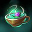
Thistle Tea
Cooldown: 60Activate to instantly restore 100 Energy. Activating Thistle Tea does not break Vanish. -
Expose Armor
Eviscerating an enemy with 3 Combo Points causes them to lose 25 Armor for 2 seconds, increasing all damage taken by 25%.
20
-
Adrenaline Rush
While in the Smoke Bomb, Valeera regenerates an additional 30 Energy per second. -
Elusiveness
Moved from level 13Increases Valeera's Movement Speed while Vanished by an additional 20% 10%. -
Enveloping Shadows
Whenever Valeera uses Vanish, she also gains Cloak of Shadows. -
Rupture
Moved from level 16Increase Garrote's damage over time by 100% 5%, stacking up to 30%. Valeera's Basic Attacks refresh the duration of Garrote. -
Nightslayer
Reduces the cooldown of Vanish by 3 seconds.
Zeratul
Developer Comments:
- Before these changes, Zeratul was the most competitive Stealth hero in high-level play, and didn't require as much tuning to normalize across all levels of play. However, we saw an opportunity to make some tweaks and add a couple of fun new elements to his kit:
- Zeratul now has the Vorpal Blade talent as a baseline ability, granting some extra mobility and letting player pull off some extra-flashy maneuvers.
- We've added a new Heroic Ability in place of Shadow Assault, Might of the Nerazim, that was designed with the goal of competing with Void Prison and playing into the technical playstyle that makes high-level Zeratul players shine:
- Might of the Nerazim Passive: Each time you use an ability, your next basic attack deals bonus damage. With this passive effect, Zeratul players will want to weave basic attacks in between abilities for maximum effectiveness.
- Might of the Nerazim Active: Your Heroic Ability button (Default: R) becomes the last active Basic Ability you used. If you Blink in, your R is now Blink. You'll want to pay extra attention to the order in which your abilities are cast. Another Cleave is a great source of extra damage, but what if you had a second Blink to escape the fight with your life?
- Might of the Nerazim Storm Talent Upgrade: Might of the Nerazim resets the cooldown on ALL basic abilities when used. After choosing this, Zeratul players can weave in basic attacks between all of their abilities, press R, and do it again!
Abilities
-
Cleave
Mana: 40 Cooldown: 6Deal 200 (+4% per level) damage to nearby enemies. -
Singularity Spike
Mana: 80 Cooldown: 12Flings a Singularity Spike that sticks to the first enemy hit. Deals 228 (+4% per level) damage after 1 second and slows the enemy by 40% for 3 seconds. -
Blink
Mana: 50 Cooldown: 10Teleport to the target location. Using this Ability does not break cloak. -
Might of the Nerazim
Mana: 30 Cooldown: 20Activate to cast an untalented version of Zeratul's most recently used Basic Ability, dealing 50% less damage. Passive: After using an Ability, Zeratul's next Basic Attack within 6 seconds deals 40% more damage. -
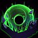
Void Prison
Mana: 100 Cooldown: 100Slows time in an area to a near standstill, making allies and enemies invulnerable and unable to act for 5 seconds. You are not affected. -
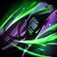
Shadow Assault
Mana: 50 Cooldown: 45Basic Attacks cause Zeratul to charge at enemies and have 20% increased Attack Speed. Lasts for 4 seconds. -
Permanent Cloak
Gain Stealth when out of combat for 3 seconds. Taking damage, attacking, using Abilities, or channeling reveals you. -
Vorpal Blade
Cooldown: 15Activate to teleport to Zeratul's last non-structure Basic Attack target within 3 seconds. The target is revealed during these 3 seconds.
Talents
1
-
Greater Cleave
Increases the radius of Cleave by 33%. -
Move Unseen
Gain 25% Movement Speed while Stealthed. -
Shadow Hunter
UpdatedQuest: Gather Regeneration Globes to lower the Mana cost of Blink by 3 2. Reward: Upon gathering 15 20 Regeneration Globes, Basic Attacks reduce the cooldown of Blink by 1 second. -
Vorpal Blade
Cooldown: 15Activate to teleport to Zeratul's last non-structure Basic Attack target within 3 seconds. The target is revealed during these 3 seconds.
4
-
Darkness Descends
Cooldown: 30Activate to gain 40% Attack Speed for 5 seconds. Passive: Gain 10% Attack Speed. -
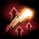
Psionic Strength
Dealing damage to enemy Heroes increases all damage dealt by 6% for 3 seconds, stacking up to 30%. -
Rending Cleave
Cleave deals an additional 40% damage over 3 seconds. -

Combo Slash
After using an Ability, Zeratul's next Basic Attack within 6 seconds deals 40% additional damage. -
Grim Task
Quest: Hero Takedowns increase Spell Power by 5%, up to 50% . This bonus Spell Power is lost on death.
7
-
Seeker in the Dark
Singularity Spike takes 50% longer to explode. It can be reactivated to teleport to the target, granting 30% increased Move Speed for 3 seconds. -
Warp Skirmisher
Vorpal Blade gains a 2nd charge. Teleporting to an enemy with Vorpal Blade causes Zeratul's next Basic Attack within 6 seconds to deal 30% more damage. -
Wormhole
UpdatedFor 3 2 seconds, reactivate Blink to return to the point where it was cast from. -
Slip into Shadow
Blink gains an additional charge, but its cooldown is increased by 8 seconds.
10
-
Might of the Nerazim
Cooldown: 20Activate to cast an untalented version of Zeratul's most recently used Basic Ability, dealing 50% less damage. Passive: After using an Ability, Zeratul's next Basic Attack within 6 seconds deals 40% more damage. -
Void Prison
Cooldown: 100Slows time in an area to a near standstill, making allies and enemies invulnerable and unable to act for 5 seconds. Zeratul is not affected. -
Shadow Assault
Cooldown: 45Basic Attacks cause Zeratul to charge at enemies and have 20% increased Attack Speed. Lasts for 4 seconds.
13
-

Mending Strikes
Basic Attacks heal for 35% of the damage dealt. -
Shroud of Adun
Zeratul gains a shield equal to 15% of his Maximum Health over 5 seconds while under Permanent Cloak. -

Spell Shield
Every 30 seconds, gain 50 Spell Armor against the next enemy Ability and subsequent Abilities for 1.5 seconds, reducing the damage taken by 50%. Can be toggled to allow or prevent this talent from triggering automatically.
16
-
Master Warp-Blade
Every third consecutive Basic Attack against the same target deals 125% bonus damage. -
Sentenced to Death
UpdatedDeal 30% 40% increased damage to enemies while they have a Singularity Spike attached to them. -
Void Slash
If Cleave hits more than one enemy Hero, it deals 50% increased damage and its cooldown is reduced by 3 seconds.
20
-
Gift of the Xel'naga
Allies are no longer affected by Void Prison, and enemies are slowed by 50% for 3 seconds once Void Prison ends. -

Nexus Blades
Basic Attacks deal 20% more damage and Slow enemy Movement Speed by 20% for 1 second. -
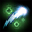
Shadow Mending
Heal for 75% of Spell Damage dealt to Heroes. -
Twilight Falls
Might of the Nerazim resets the cooldown of all Basic Abilities. -
Nerazim Fury
Shadow Assault grants 30% Life Steal, and the duration is increased by 50%. -

Rewind
Cooldown: 60Activate to reset the cooldowns of your Basic Abilities.